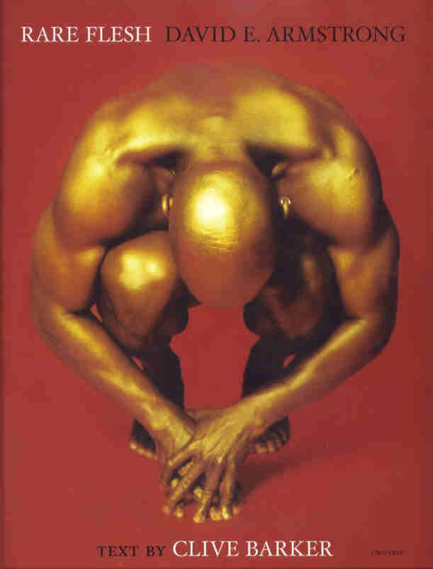
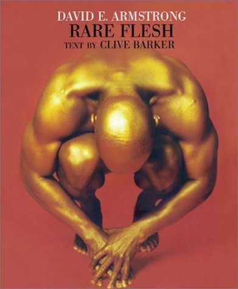
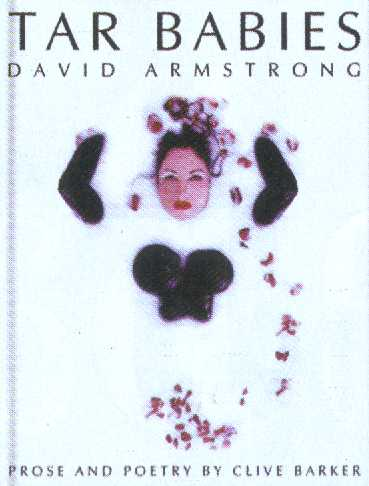
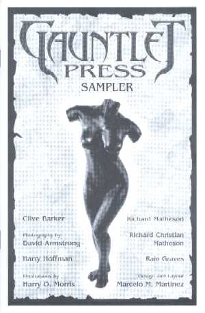

Lyrik · Rare Flesh & einzeln veröffentlichte Gedichte · nach dem Revelations-Archiv
Die Poesie
Barkers leiseste Disziplin: ein einziger Gedichtband — und dutzende Gedichte, verstreut über Romane, Anthologien und Fanzines. Aus Respekt vor den Rechten stehen hier Titel und Fundorte, nicht die Texte selbst.
Rare Flesh

Worum es geht
Barkers einziger eigenständiger Lyrikband: lange und sehr kurze Gedichte neben den Fotografien von David Armstrong — zwei Werke, die einander nicht illustrieren, sondern ergänzen. Erschienen 2003 bei Rizzoli/Universe.
Clive über das Buch
-
Barker betonte das Gleichgewicht der beiden Hälften: Seine Verse illustrieren Armstrongs Bilder nicht, und die Bilder bebildern nicht die Verse — beide fügen sich zu einem Ganzen.
Lost Souls, 2003
-
Angekündigt hatte er das Projekt als gemeinsames Buch mit seinem damaligen Partner: dessen Fotografien, dazu Prosa- und Gedichtstücke aus seiner Feder.
Revelations-Interview, 2001
-
Die Vorgeschichte führt über Gauntlet Press: Geplant war der Band dort zunächst als »Tar Babies«, wanderte dann aber zu Rizzoli — das Gauntlet-Projekt erschien nie.
Gauntlet Press / Lost Souls, 2001–2002
Ausgaben & Entwürfe
Klick vergrößert das Cover



Cover-Abbildungen: Revelations-Archiv (clivebarker.info) · Artwork teils © Clive Barker, teils © der jeweiligen Verlage
Einzeln veröffentlichte Gedichte
Viele Gedichte stecken in den Romanen selbst, allen voran im Abarat-Zyklus. Diese Bibliografie folgt dem Archiv und nennt die Titel, die darüber hinaus eigenständig oder erneut erschienen sind — mit ihren Fundorten.
- There Was a TimeFire Mass No 1, 2010 · Multiverses (Titan Books), 2023
- I Dreamed I Spoke in Another's LanguageAbarat: Days of Magic, Nights of War, 2004 · Beneath the Surface of Clive Barker's Abarat, 2011 · Multiverses, 2023
- And So with CriesDark Delicacies 3, 2009
- An April ChristmasMemory, Prophecy and Fantasy Vol 1: Liverpool Lives, 2009
- Hours · Tailor Schmidt · Amos' Poem · Peter the PiddleBeneath the Surface of Clive Barker's Abarat, 2011
- Proving PlatoGauntlet Press Sampler, 2001
- At a RehearsalMemory, Prophecy and Fantasy Vol 2: Dog Tales, 2010
- I Dreamed a Limitless BookAbarat, 2004 · Beneath the Surface of Clive Barker's Abarat, 2011
- Rocco · The Moustache · The Colours · Insolence · The Exorcist · Interruptions of Light · Contrary Ideas on Health u. v. m.Memory, Prophecy and Fantasy Vol 3: Masquerades, 2014
- Touch the Rod · CrueltyRare Flesh, 2003 · Tonight, Again, 2015 / 2018
- Here is Laid · Mater Salvatoris · Until the Beginning Comes · I Am Tired of Beauty u. v. m.Rare Flesh, 2003
- There'll Be No Sun Tomorrow · Dream! · Oh Sweet Children · As Thorn and Flower u. v. m.Abarat: Absolute Midnight, 2011
- I Love You · If the Pen is the Penis · Men in the Aisles of Supermarkets · I Have My Art · A Monster Lies in WaitTonight, Again, 2015 / 2018
- Good Art is Hot BreadClive Barker: Imaginer Vol 4, 2017
- The HourAbarat: Days of Magic, Nights of War, 2004 · Out of the Ruins (Titan Books), 2021
- Fear OnlyScreen Violence (Chvrches-Fanzine), 2021
- Upon a Milk Warm DawnThe Mad Butterfly's Ball (PS Publishing), 2024 · überarbeitet als »A Life«: Rue Morgue No 222, 2025
- But O!Abarat Part One, 2004 · Rue Morgue No 222, 2025